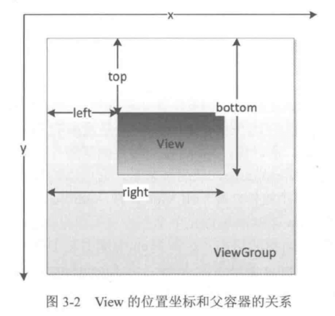
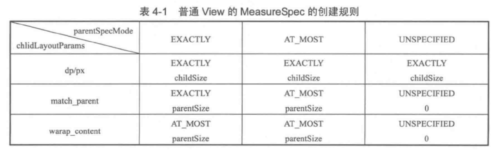

Android 开发艺术探索学习笔记（三）

结合 官方文档 阅读《Android 开发艺术探索》时所做的学习笔记。本篇记录第 3~5 章 View 相关。
View 的事件体系
View 基础知识
什么是 View？
View 是界面层控件的抽象，代表了一个控件。与 Web 中的 DOM 数类似，在 Android 中所有视图共同形成了一个 View 的树形结构。
View 的位置参数
View 的初始位置，相对于父容器的坐标。一图胜千言：
另外还有 translationX 和 translationY，表示 View 在 x 轴或者 y 轴上的偏移量，以及 (x,y) 代表当前坐标，可以根据 translationX + left 以及 translationY + top 计算出来。
MotionEvent 和 TouchSlop
常用触摸事件，通常是一个事件序列，比如点击的时候是 DOWN+UP，滑动的时候是 DOWN+MOVE(…多个)+UP：
1 | |
系统所能识别的最小滑动距离：
1 | |
VelocityTracker & GestureDetector & Scroller
Track velocity
1 | |
Detect common gestures
1 | |
Animate a scroll gesture
<不贴代码了>
扩展阅读
View 的滑动
三种类型
- 使用 scrollTo/scrollBy
- 使用动画
- 改变布局参数
对比
- scrollTo/scrollBy：操作简单，适合对 View 的内容的滑动
- 动画：操作简单，适用于没有交互的 View 和实现复杂动画效果
- 改变布局参数：操作稍复杂，适用于有交互的 View
扩展阅读
弹性滑动
如果直接滑动，显得比较生硬，所以我们需要实现渐进式滑动也即弹性滑动。
- 使用 Scroller，阅读文档：Animate a scroll gesture
- 通过动画，阅读文档：Animate movement using spring physics
- 使用延时策略，也即利用 View 或者 Handler 的 postDelayed() 方法，例子见：android-art-res
View 的事件分发
点击事件的传递规则
简单来说 ViewGroup 用 dispatchTouchEvent(MotionEvent e) 来分发事件，如果 View 能接收触摸事件那么该方法一定会被调用到。该方法中，通过 onInterceptTouchEvent(MotionEvent e) 来判断是否需要拦截触摸事件，如果返回 true 则事件不再继续往下传递，那么你就需要通过实现该 ViewGroup 中的 onTouchEvent(MotionEvent e) 来对触摸事件进行处理。
View 的滑动冲突
分为三种情况：
- 外部滑动方向与内部滑动方向不一致
- 外部滑动方向与内部一致
- 以上两种的嵌套
对于第一种，我们可以根据滑动的方向、角度、距离差、速度差等来判断到底是由内部还是外部的 View 来拦截滑动事件并进行处理。
对于第二种，则需要根据具体业务来做处理，比如 ScrollView 嵌套一个 RecyclerView，规定当内部的 RecyclerView 滑动到顶部或者底部的时候外部的 ScrollView 就要开始响应滑动事件，我们就可以根据滑动距离以及 Header 是否显示（或者第一个元素是否完全显示）来判断。
第三种的解决方案和上面两种一样，只不过是多加几种判断并且进行相应地分发给对应的子 View 就可以了。
具体解决方案：
- 外部拦截法。外部拦截法即所有点击事件都先经过父容器的拦截，父容器中进行判断是否消耗事件或者传递给子元素，需要重写
onInterceptTouchEvent()方法。 - 内部拦截法。父容器不拦截点击事件，所有事件都传递给子元素，如果子元素需要事件就消耗掉，否则就交给父类处理。需要重写
dispatchTouchEvent()方法，还需要配合requestDisallowInterceptTouchEvent()使用。这种方法与事件分发机制相反，故不推荐使用。
View 的工作原理
ViewRoot 和 DecorView
ViewRoot 是 ViewRootImpl 的基类，后者是连接 WindowManager 和 DecorView 的纽带，View 的三大流程都是通过 ViewRoot 完成的。Activity 创建完成后，会将 DecorView 添加到 Window 中，同时会创建 ViewRootImpl 并将它与 DecorView 建立关联。
View 的绘制流程从 ViewRoot 的 performTraversals 开始，经过 measure（测量 View 的宽高）、layout（确定 View 在父容器中的位置）、draw（绘制在屏幕上）三个过程完成 View 的绘制。
DecorView 是顶级 View，内部包含一个 LinearLayout，分为上下两个部分，上面是 TitleBar，下面是 Content，获取我们的 View 可以通过 findViewById(android.R.id.content).getChildAt(0)，如图：
另外，DecorView 是一个 FrameLayout，所有事件都会先经过 DecorView 再传递到我们的 View。
理解 MeasureSpec
MeasureSpec
MeasureSpec 通过将 SpecMode 和 SpecSize 打包成一个 int 值来避免过多的对象的内存分配。为了方便操作，其提供了打包和解包的方法，SpecMode 和 SpecSize 也是一个 int 值，一组 SpecMode 和 SpecSize 可以打包为一个 MeasureSpec 的 int 值，而一个 MeasureSpec 的 int 值可以通过解包得到原始的 SpecMode 和 SpecSize。
SpecMode 有三类：
- UNSPECIFIED，父容器不对 View 的大小进行限制，一般用于系统内部，表示测量的状态；
- EXACTLY，父容器已经测得所需的大小，View 的最终大小就是SpecSize 所指定的值。对应于 LayoutParam 中的 match_parent 和具体数值。
- AT_MOST，父容器指定了一个可用大小即 SpecSize，View 的大小不能大于这个值，具体大小根据 View 的实现而有所不同。对应于 LayoutParam 中的 wrap_content。
MeasureSpec 和 LayoutParam 的关系
DecorView 和普通 View 的 MeasureSpec 的转换方式不同，DecorView 通过自身的 LayoutParam 就可以确定 MeasureSpec：
- LayoutParam.MATCH_PARENT: SpecMode is EXACTLY, SpecSize equal to Window size.
- LayoutParam.WRAP_CONTENT: SpecMode is AT_MOST, SpecSize is not fixed but cannot be larger than the Window size.
- Fixed size (e.g. 100dp): SpecMode is EXACTLY, SpecSize as specified.
而普通 View 的 MeasureSpec 则相对复杂一些，除了 LayoutParam 之外，还需要根据父容器的 MeasureSpec 才能决定：
View 的工作流程
分为 measure 过程、layout 过程、draw 过程，具体请阅读 How Android Draws Views 以及 Custom Drawing 部分。
自定义 View
自定义 View 的分类
- 继承 View 重写
onDraw方法
这种方法主要用于实现一些不规则的效果，需要支持 wrap_content 并且 padding 也需要自己处理。
- 继承 ViewGroup 派生特殊 Layout
用于实现自定义布局，比第一种复杂，需要处理 onMeasure 和 onLayout，还要处理子 View 的 onMeasure 和 onLayout
- 继承特定的 View（比如 TextView）
较为常见，用于扩展某个 View 的功能，实现起来也较为简单。
- 继承特定的 ViewGroup（比如 LinearLayout）
同样较为常见，比如需要实现类似几个 View 组合在一起的效果的时候，不需要自己处理 ViewGroup 的 onMeasure 和 onLayout，方法 2 比这个方法更底层，实现起来更复杂。
自定义 View 须知
- 让 View 支持 wrap_content
- 让 View 支持 padding
- 尽量不要使用 Handler，使用 View 自身的 post 方法
- 在
View.onDetachedFromWindow()中停止动画 - 如果 View 带有滑动嵌套，需要处理好滑动冲突
自定义 View 示例
理解 RemoteViews
RemoteViews 的应用
RemoteViews 可以在其他进程中显示并更新界面，主要用于通知栏和桌面部件。
通知栏
通过 RemoteViews 和 NotificationManager 加载通知栏的自定义布局。
桌面 Widget
通过 RemoteViews 和 AppWidgetProvider 创建桌面小部件。
关于 PendingIntent
PendingIntent 在我看来是包含了一个可以稍后执行的 Intent 的容器，我们可以用它启动 Activity、Service 以及发送广播。它由系统执行，意味着即使我们的 app 被杀死了，依旧可以利用它启动我们想要的组件。系统通过 requestCode 和 Intent 区分不同的 PendingIntent，只是更改 Intent 的 extra 不会起作用。如果我们需要启动两个不同的通知，也可以通过使用不同的 notificationId。
RemoteViews 的内部机制
支持的 View 类型
四大 layout, ListView, Button, ImageButton, ImageView, TextView, ProgressBar 等，不支持 EditText，其它具体见文档：RemoteViews。
RemoteViews 的工作机制
由于 RemoteViews 在远程进程显示，所以没法通过 findViewById 来获取 View，只能通过反射实现，即一系列的 setXXX 方法（大部分是通过反射）。
RemoteViews 实现了 Parcelable 所以可以跨进程传输，首先通过 Binder 传递到 SystemService 进程，然后系统通过 RemoteViews 中的包名信息获取对应的布局文件并加载。
所以当我们调用一系列的 set 方法其实也都是跨进程的。之所以不直接让 View 支持跨进程，是因为开销太大，毕竟 View 的方法很多，而是巧妙地通过一个 Action（封装了对 View 的操作）来进行 IPC。
RemoteViews 的意义
可以利用 RemoteViews 进行跨进程更新 UI（限制比较大，但是挺有趣的）。
系列文章
- Android 开发艺术探索学习笔记（一） - 第 1 章：生命周期和启动模式
- Android 开发艺术探索学习笔记（二） - 第 2 章：IPC 机制
- Android 开发艺术探索学习笔记（三） - 第 3~5 章：View 事件机制等
- Android 开发艺术探索学习笔记（四） - 第 6, 7, 12 章：Drawable，动画，Bitmap
- Android 开发艺术探索学习笔记（五） - 第 8, 10, 11 章：Window，线程和线程池，消息机制
- Android 开发艺术探索学习笔记（六） - 第 13~15 章：综合技术，JNI 和 NDK，性能优化